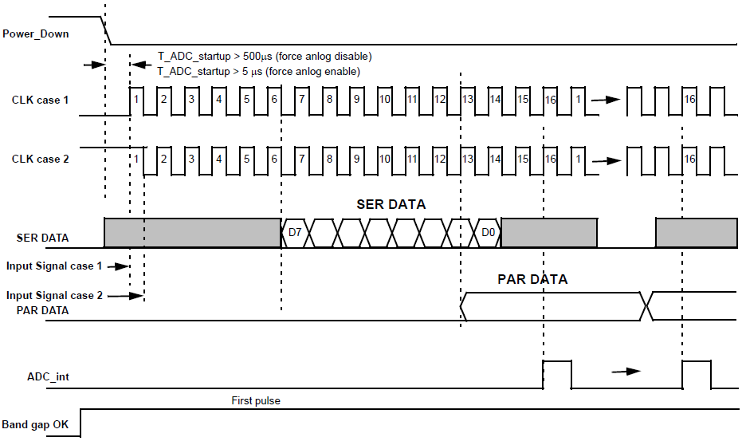

The Analog to Digital Converter (ADC) converts a voltage to a digital value. The PAK4 is equipped with one 8-bit Successive approximation ADC (SAR ADC). Max sampling speed is 100kHz.
ADC output timing diagram

Figure 1.
The length of time after power on before normal operation. The first power on is always 500us. Every subsequent cycle without shutting down the entire chip is either 500uz or 5us depending on the Force analog enable parameter
Regardless of the default clock state, ADC will operate as expected.
Serial output becomes valid 6 ½ clocks after ADC Startup and runs for 8 clock cycles.
Parallel output becomes valid 13 clocks after ADC startup.
The Interrupt output is one clock period long and signifies the PAR data is valid.
BG macrocell output will be HIGH during the time ADC is powered on.
Mode: the measurement mode used by PGA. This setting is changed from PGA’s properties.
• Single-ended: gain is applied to IN+ (Channel 1 or Channel 2) with reference to GND;
• Differential: gain is applied to the difference between IN+ (Channel 1 only) and IN- with an offset of Vref/2. e.g. Output is Vref/2 when difference is zero. IN+ can be above or below IN-;
• Pseudo-differential: gain is applied to the difference between IN+ (Channel 1 only) and IN- with no offset. Output is 0V when difference is zero. Operating range assumes IN+ is always above IN-;
The ADC’s reference voltage. For optimal performance, external Vref values should not be greater than 1.0V.
• Bandgap (1V or 0.778V);
• External user defined voltage source (PIN17);
• Power divider of (0.25 or 0.5) × VDD;
The analog part consists of the bandgap and regulator. Forcing these parts on allows for faster PGA/ADC power on but consumes more current.
• Disable: Analog part slaved to ADC power control. ADC startup time per cycle is 500us;
• Enable: Analog part does not power down with ADC. ADC startup time for first power on is 500us and 5us for subsequent startups;
This affects the bandwidth of the analog parts of the ADC signal chain. 100kHz is only supported option.
By default, this parameter is disabled and the ADC is clocked by ADC_CLK/16. When used as PWM input, it is recommended to disable this bypass.
Enable/Disable syncing between SER data and the SPI clock.
Use ‘ADC->10’ for 8-bit SPI data serial out on PIN10. View timing diagram for details.
Parallel data out: ADC output 8-bit parallel data can be an input to the DCMP/PWM macrocells or FSM macrocells. Please go to the DCMP/PWM or FSM info blocks for help on how to connect to ADC Parallel data out.